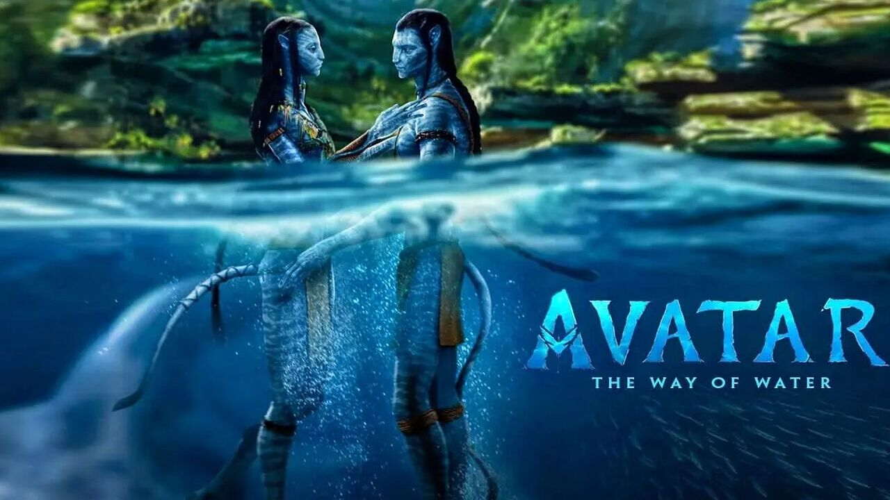
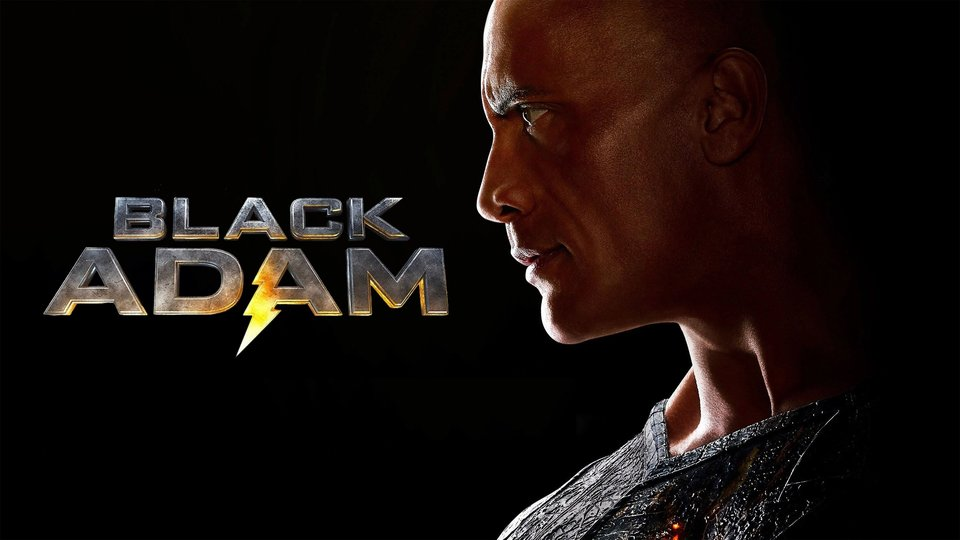

RESEÑAS DE PELÍCULAS
Nuestras últimas reseñas de los estrenos del año en la industria cinematográfica

🟡Mente (9): La inteligente secuela que no sabíamos que necesitábamos. James Cameron vuelve a dar cátedra de cómo hacer un verdadero blockbuster. Redescubre el mundo de Pandora, lo expande, y lo trae de nuevo de manera más impactante con una historia diferente y hasta quizás mejorada.
🔴Realidad (10): Difícil manejar 13 años de ausencia para una secuela de un film tan impactante, rellenar huecos, traer un nuevo conflicto y que no quede torpe y vacío. Argumentalmente no hay demasiado para quejarse, sería buscarle el pelo al huevo. Es agradable por donde se la mire, desde la cantidad de acción que contiene, la emoción que se maneja y se vuelve cada vez más tensa e inquietante, y hasta los pequeños conflictos familiares, típicos pero bien usados para darle cierto respiro a todo el caos.
🔵Espacio (8): Si, la trama no es algo descabellado de Nolan, pero en su simpleza logra ser fluida y no cae en torpezas. Es un blockbuster de esos que parecen aún más y que buscan serlo. Varias subtramas enramadas para desarrollar a los personajes, para traer nuevos aires y que no sea otra vez la historia de Pocahontas en el espacio. Mejoras en varios puntos, y eso que la de 2009 es brillante.
🟠Alma (8): No hay un impactante aporte a nivel actoral realmente, pero los personajes están bien logrados y los nuevos integrantes suman. El desarrollo de cada uno de los nuevos fue lo que más me gustó, incluso la importancia de algunos en lo que será la tercera entrega seguramente.
🟣Poder (10): Impresionante a nivel visual. Un despliegue de efectos especiales y CGI perfecto, con muchísima acción, y por momentos una agresividad que no parece ser de Disney.
🟢Tiempo (8): Manejar ese ritmo durante más de 3hs no es para cualquiera. Pocas veces se logra, y puedo decir que nunca te aburre. Eso si, ojo los que sufrimos dolor de espalda, eso sí se siente
The Hood
Guantelete (8.9) SIN SPOILERS de Avatar: The Way of Water
🔴Realidad (10): Difícil manejar 13 años de ausencia para una secuela de un film tan impactante, rellenar huecos, traer un nuevo conflicto y que no quede torpe y vacío. Argumentalmente no hay demasiado para quejarse, sería buscarle el pelo al huevo. Es agradable por donde se la mire, desde la cantidad de acción que contiene, la emoción que se maneja y se vuelve cada vez más tensa e inquietante, y hasta los pequeños conflictos familiares, típicos pero bien usados para darle cierto respiro a todo el caos.
🔵Espacio (8): Si, la trama no es algo descabellado de Nolan, pero en su simpleza logra ser fluida y no cae en torpezas. Es un blockbuster de esos que parecen aún más y que buscan serlo. Varias subtramas enramadas para desarrollar a los personajes, para traer nuevos aires y que no sea otra vez la historia de Pocahontas en el espacio. Mejoras en varios puntos, y eso que la de 2009 es brillante.
🟠Alma (8): No hay un impactante aporte a nivel actoral realmente, pero los personajes están bien logrados y los nuevos integrantes suman. El desarrollo de cada uno de los nuevos fue lo que más me gustó, incluso la importancia de algunos en lo que será la tercera entrega seguramente.
🟣Poder (10): Impresionante a nivel visual. Un despliegue de efectos especiales y CGI perfecto, con muchísima acción, y por momentos una agresividad que no parece ser de Disney.
🟢Tiempo (8): Manejar ese ritmo durante más de 3hs no es para cualquiera. Pocas veces se logra, y puedo decir que nunca te aburre. Eso si, ojo los que sufrimos dolor de espalda, eso sí se siente

🟡Mente (6): A pesar de estar 15 años en producción, no se nota que ese tiempo fuera bien aprovechado. Más bien se siente que en todos estos años ideas fueron y vinieron, pero al final se fueron por lo que funcionó antes. Ya que no se siente que tome riesgo en ningún lado.
🔴Realidad (7): No todo es malo, la acción sí ofrece un muy buen espectáculo y algo del humor logra sacarte unas cuantas risas. Además parece sentar los cimientos de un futuro un poco más brillante para DC. Quizás esta cinta no fue la salvadora que esperábamos, pero abrió la puerta a nuevas y prometedoras oportunidades.
🔵Espacio (5): El guión va a todos lados, pero no se centra en nada. Lo que debería ser una simple historia de héroes contra villanos, mete tantas cosas en la mezcla que ya no sabes de qué va trama. Por un lado tenemos el enfrentamiento entre el villano y los héroes, después un drama familiar que es como si fuera el lado "amor" de la la película, muy cliché todo.
🟠Alma (7) Que decir de The Rock. Nunca fue un actor que me gustara, convence con la actuacion en la peli, esa cara de nada, pero está bien, Black Adam es una maquina de matar y desalamada que además es demasiado poderoso. Pierce Brosnan ofrece una actuación encantadora y misteriosa como el Doctor Fate, aunque el guion intenta hacer demasiado con su personaje sin dedicarle suficiente tiempo de sus dos horas de pantalla para ganárselo. Hawkman sirve principalmente como saco de boxeo, pasa la mayor parte de su tiempo en pantalla recibiendo golpes. Atom Smasher y Cyclone no tienen un gran desarollo.
🟣Poder (10): La mayoría del tiempo los efectos especiales se ven impresionantes aunque hay escenas donde quedan a deber. Algunas escenas hacen uso excesivo de la cámara lenta y en ocasiones meten piezas musicales de la cultura pop que no quedan del todo. Lo cual hace que se sientan algo ridículas.
🟢Tiempo (6): Con 2 horas y poquito se siente a la vez sobrecargada y subdesarrollada. No da a basto para contar todo lo que plantea la cinta. No se vayan antes de que terminen los créditos.
Wallcrawler
Guantelete (6.4) SIN SPOILERS de Black Adam
🔴Realidad (7): No todo es malo, la acción sí ofrece un muy buen espectáculo y algo del humor logra sacarte unas cuantas risas. Además parece sentar los cimientos de un futuro un poco más brillante para DC. Quizás esta cinta no fue la salvadora que esperábamos, pero abrió la puerta a nuevas y prometedoras oportunidades.
🔵Espacio (5): El guión va a todos lados, pero no se centra en nada. Lo que debería ser una simple historia de héroes contra villanos, mete tantas cosas en la mezcla que ya no sabes de qué va trama. Por un lado tenemos el enfrentamiento entre el villano y los héroes, después un drama familiar que es como si fuera el lado "amor" de la la película, muy cliché todo.
🟠Alma (7) Que decir de The Rock. Nunca fue un actor que me gustara, convence con la actuacion en la peli, esa cara de nada, pero está bien, Black Adam es una maquina de matar y desalamada que además es demasiado poderoso. Pierce Brosnan ofrece una actuación encantadora y misteriosa como el Doctor Fate, aunque el guion intenta hacer demasiado con su personaje sin dedicarle suficiente tiempo de sus dos horas de pantalla para ganárselo. Hawkman sirve principalmente como saco de boxeo, pasa la mayor parte de su tiempo en pantalla recibiendo golpes. Atom Smasher y Cyclone no tienen un gran desarollo.
🟣Poder (10): La mayoría del tiempo los efectos especiales se ven impresionantes aunque hay escenas donde quedan a deber. Algunas escenas hacen uso excesivo de la cámara lenta y en ocasiones meten piezas musicales de la cultura pop que no quedan del todo. Lo cual hace que se sientan algo ridículas.
🟢Tiempo (6): Con 2 horas y poquito se siente a la vez sobrecargada y subdesarrollada. No da a basto para contar todo lo que plantea la cinta. No se vayan antes de que terminen los créditos.